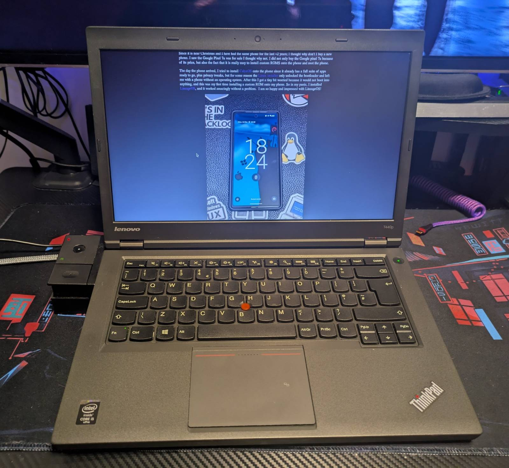
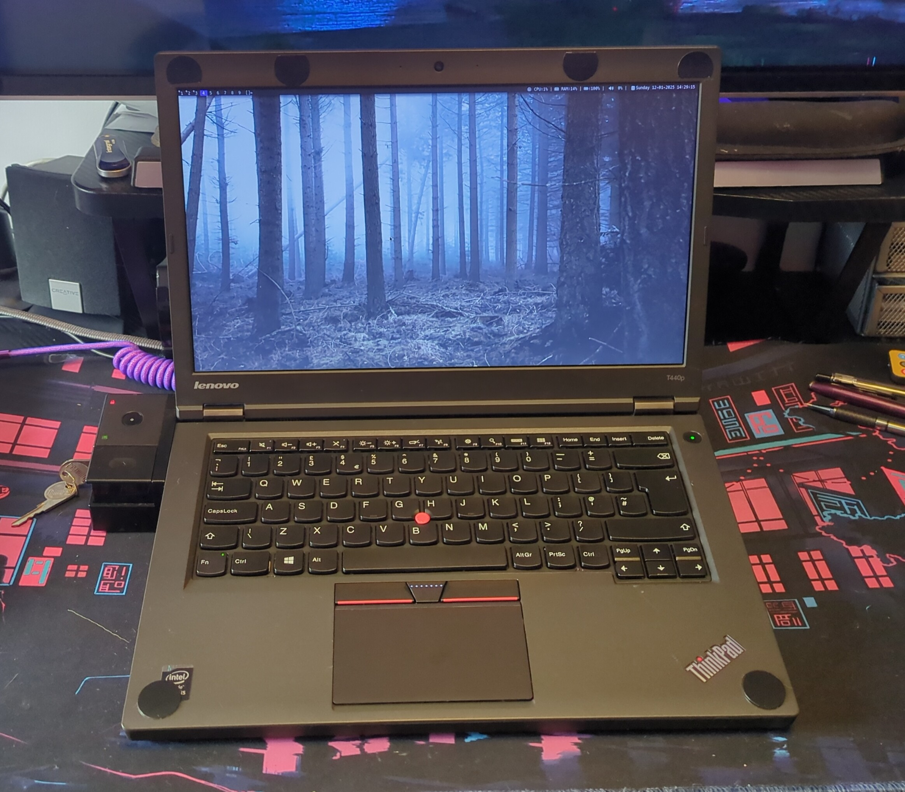

ThinkPad T440p
Original condition of the Thinkpad T440p when I brought it in December 2024
UltraNav trackpad upgrade
The main reason why I replaced the OEM trackpad is simple: it is horrible, feels horrible, and stopped working two weeks after I bought the laptop. In all fairness to the OEM trackpad is 12 years old as of 2025, and that is probably why it went all weird.
Warning!!! Put rubber bits on your lid to prevent the UltraNav trackpad from scratching the screen. This is because the middle button is more elevated than the space bar, causing scratching.
I brought a synaptics UltraNav trackpad off of aliexpress.
Back 🚪